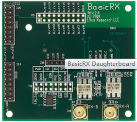
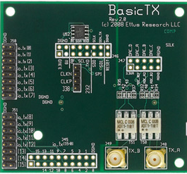

BasicTX-BasicRX数据传输
硬件要求：
1.甲乙两台装有USRP1镜像系统（64MHz或52MHz）的电脑。
2.两个USRP1主板。
3.一个BasicRX（1-250MHz）子板和一个BasicTX（1-250MHz）子板。
4.一根SMA-SMA的USRP馈线。
软件环境：
USRP1镜像系统（64MHz或52MHz）。
DEMO调试
1.介绍一下子板
BasicRX

BasicRX USRP子板（1 – 250MHz）
BasicRX具有子板是提供给ADC的输入端直接访问的低成本子板。该板可以接受的实模式的信号从1到250MHz。Basic RX具有非常适合使用外部前端应用操作的带宽内提供相对干净的信号。宽带变压器耦合每个RF输入到USRP设备的ADC的单个信道。由ADC采样的信号在FPGA被操纵，并且可以被处理为两个实模式的信号，或一个单一的I-Q对。该Basic RX具有不包括本地振荡器或下变频器。它有可能使用子采样方法来接收较高频率。在这种情况下，用户必须确保信号进行滤波，以避免不希望的信号的混叠。
BasicTX

BasicTX USRP子板（1 – 250MHz）
该BasicTx子板是一个低成本的子板，可提供传输能力从USRP从1到250MHz。BasicTx使用两个宽带变压器到USRP的双DAC输出匹配50欧姆的SMA连接。
BasicTx板的带宽允许USRP在一个频带分割模式下操作时所期望的输出频率超出USRP DAC的采样时钟速率。BasicTx的每个输出可以独立工作，或者组合成单个I / Q对。需要注意的是适当的过滤应子采样模式下使用。应用实例包括与外部射频前端发射端直接生成通带信号和定制子卡开发基带...
DEMO测试步骤
1、获取root权限(因为都要直接对硬件操作)
终端输入命令：
sudo su
2、甲PC机连接的母板上使用接收A接口并检测主机与板子USB口的连接
终端输入命令：
lsusb | grep fffe:0002
若出现...Device 004:ID fffe:0002这样的字样，表示正常连接。
3、乙PC机连接的母板上使用发送A接口并检测主机与板子USB口的连接
终端输入命令：
lsusb | grep fffe:0002
若出现...Device 004:ID fffe:0002这样的字样，表示正常连接
4、乙PC机向甲主机发送20M Hz的正弦波。
终端输入命令：
cd /usr/share/gnuradio/examples/digital/
./benchmark_tx.py -f 200M -T A:0
出现下图则发送正常

5、甲PC机准备接收数据
终端输入命令：
cd /usr/share/gnuradio/examples/digital/
./benchmark_rx.py -f 200M -T A:0
出现下图则接收正常